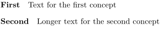

Contents
Summary
The instances of \startdescription ... \stopdescription are defined by \definedescription
Settings example
| \startDESCRIPTION[...=...,...] ... \stopDESCRIPTION | |
| title | text |
| bookmark | text |
| list | text |
| reference | reference |
Settings example:title
Description
Examples
Example 1
-
\definedescription [concept] [alternative=serried, headstyle=bold, width=broad] \concept{First} Text for the first concept \startconcept{Second} Longer text for the second concept \stopconcept
- 